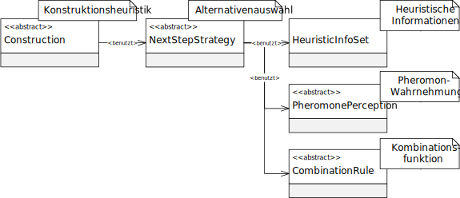

类 AbstractNextStepStrategy<E extends AbstractPheromoneAssociation,S extends AbstractSolution>
java.lang.Object
eu.andredick.aco.nextstep.AbstractNextStepStrategy<E,S>
- 直接已知子类:
NextStepStrategyOnSubsetPairs,NextStepStrategyOnSubsets,NextStepStrategyOnSubsetsDeterministic,NextStepStrategyOnSubsetsStochastic
public abstract class AbstractNextStepStrategy<E extends AbstractPheromoneAssociation,S extends AbstractSolution>
extends Object
候选方案组件的抽象
该组件由启发式构造组件
从给定候选方案（解决方案组件）中选择一项。
替代方案的选择基于启发式信息
以及感知的信息素浓度
通过组合功能
另一个依赖是信息素关联组件 (参见
能够确定感知到的信息素值以及实际的信息素值。
抽象组件的实现必须实现方法
该组件由启发式构造组件
AbstractConstruction 调用用,从给定候选方案（解决方案组件）中选择一项。
替代方案的选择基于启发式信息
HeuristicInfoSet 以及感知的信息素浓度
AbstractPheromonePerception。通过组合功能
CombinationRule替代方案的值由启发式信息和感知的信息素浓度形成。另一个依赖是信息素关联组件 (参见
AbstractPheromoneAssociation。能够确定感知到的信息素值以及实际的信息素值。
抽象组件的实现必须实现方法
chooseSubset(AbstractSolution, List) 。

-
字段概要
字段修饰符和类型字段说明protected CombinationRule组合功能（结合信息素感知值和启发式信息）protected HeuristicInfoSet启发式信息protected AbstractPheromonePerception信息素感知protected E特定问题的信息素关联组件 -
构造器概要
构造器构造器说明AbstractNextStepStrategy(E pheromoneStructure, AbstractPheromonePerception perceptionRule, HeuristicInfoSet heuristics, CombinationRule combinationRule) 构造函数 -
方法概要
修饰符和类型方法说明abstract IntegerchooseSubset(S solution, List<Integer> availableSubsets) 从给定集合中选择候选解的抽象方法。
-
字段详细资料
-
pheromoneStructure
特定问题的信息素关联组件 -
perceptionRule
信息素感知 -
heuristics
启发式信息 -
combinationRule
组合功能（结合信息素感知值和启发式信息）
-
-
构造器详细资料
-
AbstractNextStepStrategy
public AbstractNextStepStrategy(E pheromoneStructure, AbstractPheromonePerception perceptionRule, HeuristicInfoSet heuristics, CombinationRule combinationRule) 构造函数- 参数:
pheromoneStructure- 信息素关联perceptionRule- 信息素感知heuristics- 启发式信息combinationRule- 组合功能
-
-
方法详细资料
-
chooseSubset
- 参数:
solution- 蚂蚁的部分解availableSubsets- 可用的替代方案- 返回:
- 选定的替代方案
-